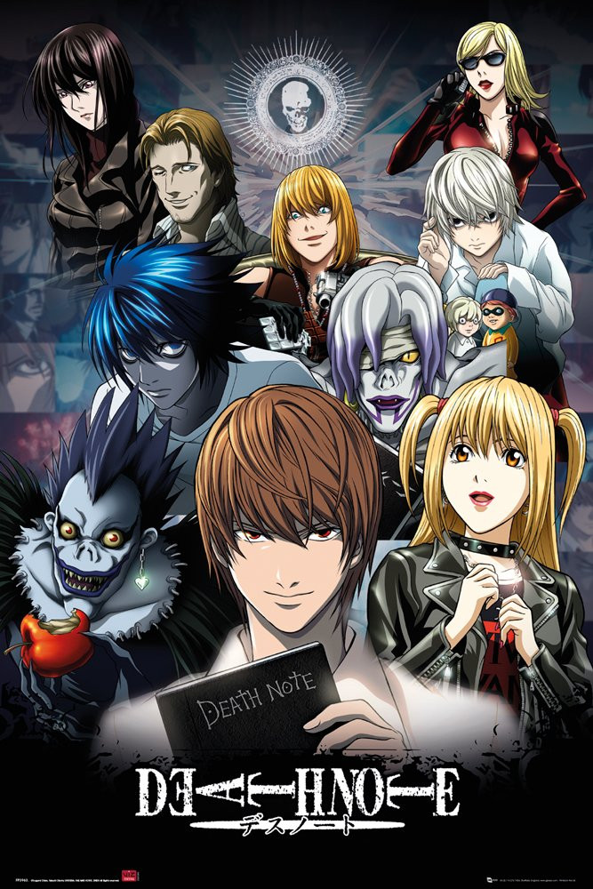
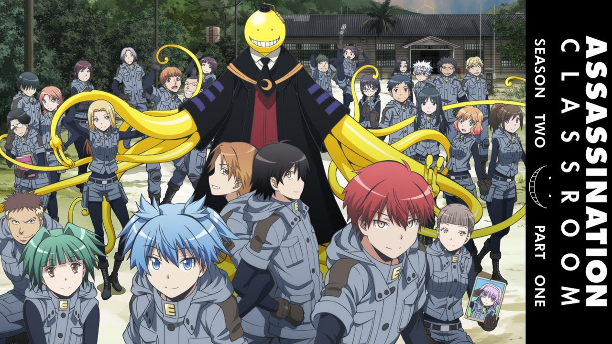
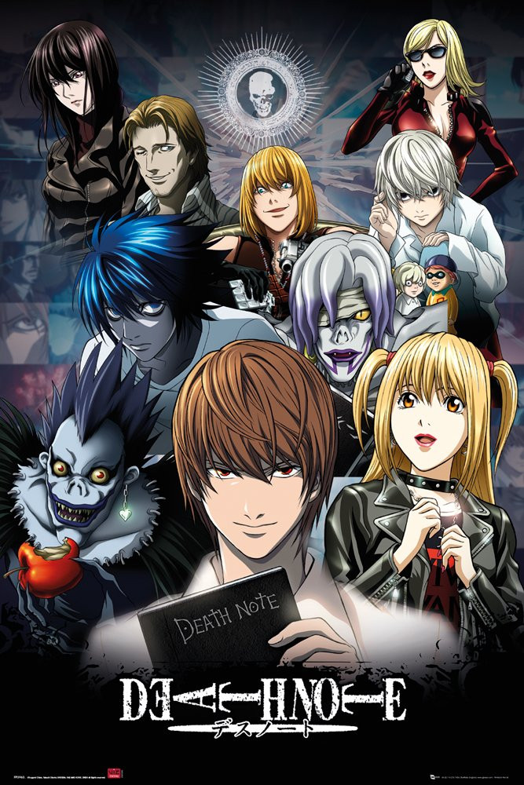
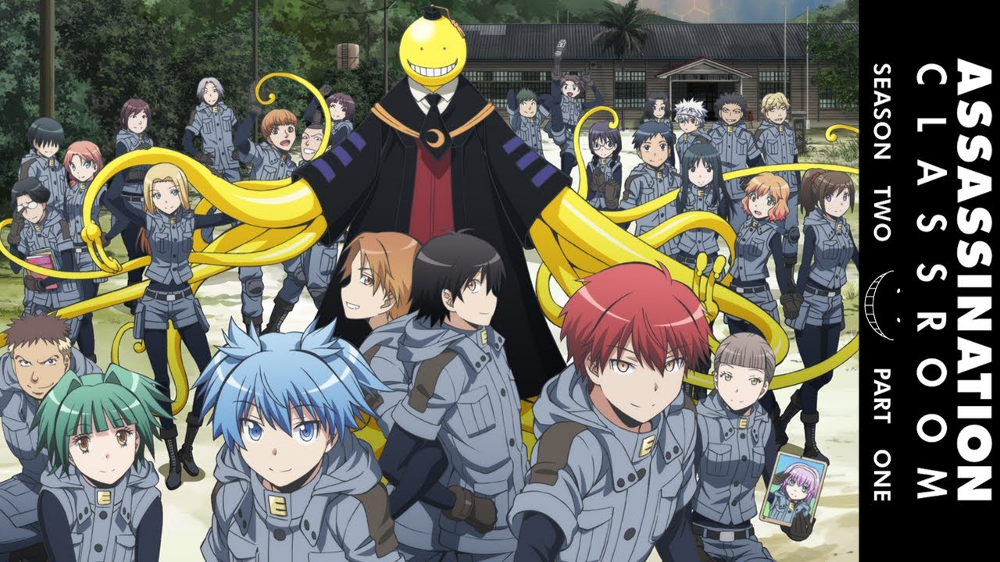
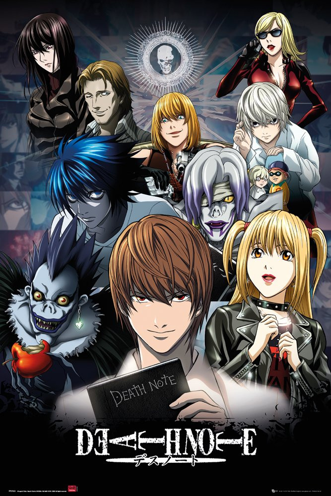
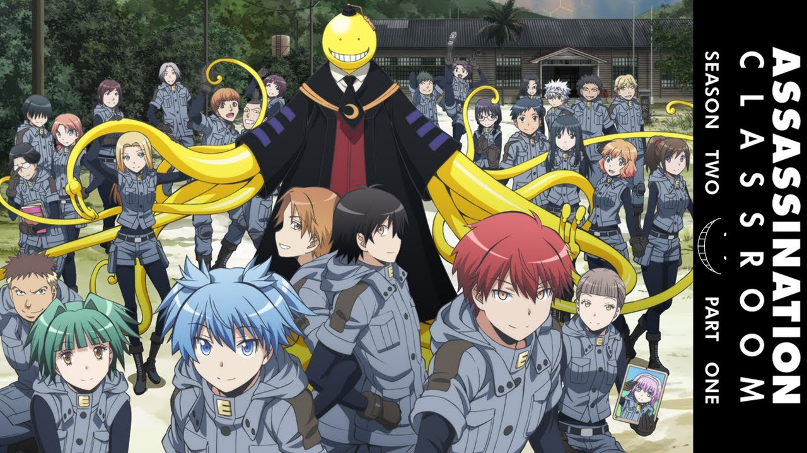

Anime Images

 



This is page Top anchor Jump to the lower section


Satoru Mikami is an ordinary 37-year-old corporate worker living in Tokyo. He is almost content with his monotonous life, despite the fact that he doesn't have a girlfriend. During a casual encounter with his colleague, an assailant pops out of nowhere and stabs him. While succumbing to his injuries, a mysterious voice echoes in his mind and recites a series of commands which he could not make sense of.
After regaining consciousness, Satoru discovers that he has been reincarnated as a Slime in an unfamiliar world. At the same time, he also acquires new-found skills, particularly the ability called "Predator," which allows him to devour anything and mimic its appearance and skills. He stumbles upon Veldora Tempest, a Catastrophe-level 'Storm Dragon', who was sealed for 300 years for reducing a town to ashes. Feeling sorry for him, Satoru befriends the dragon, promising to help him in destroying the seal. In return, Veldora bestows upon him the name Rimuru Tempest to grant him divine protection.
With his newfound powers and his wisdom, Rimuru gains the friendship and loyalty of the monsters inhabiting the Great Jura Forest, who accept him as their leader and together they found the nation of Tempest. As their new nation quickly grows in strength and influence, Rimuru and his subjects draw the attention of the nearby foreign powers, from monarchs and legendary heroes to demon lords, some seeking to become their allies, while others intend to just take advantage or destroy them completely for the sake of their plans.